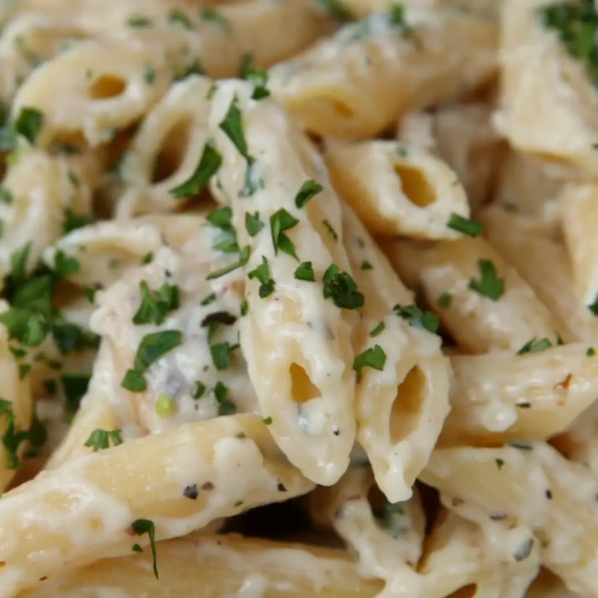

Penne Alfredo

This Penne Alfredo is a quick and easy family dinner!
Ingredients
- 1 tbsp olive oil
- 1.5 pounds boneless skinless chicken breast cubed
- 1 tsp sea salt
- 1 tsp garlic powder
- 1/2 tsp ground black pepper
- 1 16oz box penne pasta
- 3 cups water
- 1.5 cups heavy cream
- 1/2 cup butter cut into large pieces
- 1/4 tsp ground nutmeg
- 1/2 cup grated parmesan cheese
Steps
- Heat olive oil in a large pot. Add chicken, season with sea salt, garlic powder and pepper, and cook over medium heat until chicken reaches 165 degrees.
- Add uncooked penne noodles and water to the pot, submerging pasta noodles. Place the lid on the pot and bring to a boil over medium high heat, stirring frequently.
- When pasta softens, remove lid and stir in heavy cream and butter.
- Stir in ground nutmeg and parmesan cheese, reduce heat and cook, stirring frequently until pasta is al dente
- Remove from stove, season with salt and pepper to taste.
- Top with fresh parsley and serve.